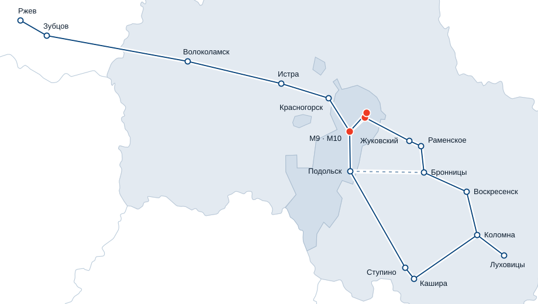

Интернет для организаций
Подключение офиса, магазина или другого объекта. Начните с адреса и количества пользователей; если нужная скорость уже известна, укажите её в запросе.
Подключение офиса ↗Интернет, корпоративные сети и телефония для офисов, бизнес-центров и распределённых компаний.
Обсудить подключение
Подключение офиса, магазина или другого объекта. Начните с адреса и количества пользователей; если нужная скорость уже известна, укажите её в запросе.
Подключение офиса ↗Связь между офисами, складом и другими объектами компании. Опишите, какие системы должны работать между площадками, и приложите список адресов.
Корпоративная сеть ↗Если связь на объекте уже есть, расскажите, какой канал хотите резервировать. Возможность второго ввода и отдельного маршрута нужно проверить по адресу.
Обсудить резерв ↗Для телефонной связи укажите число номеров и одновременных разговоров. Для телевидения сообщите тип объекта и число точек просмотра: состав услуги уточним в предложении.
Уточнить условия ↗Обсудим подключение здания и услуги для арендаторов. Понадобятся адрес, стадия готовности объекта и сведения о кабельных вводах.
Обсудить объект ↗Укажите адреса и задачи: доступ в интернет, связь между офисами или резерв. Если не знаете нужную скорость, расскажите о числе пользователей и программах, которыми они пользуются.
Посмотреть географию сети ↗Укажите адрес и нужную услугу. Если нужно связать две площадки, напишите оба адреса.
+7 495 748-13-49 ↗